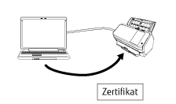

Übersicht
Network Setup Tool for fi Series ist eine Anwendung, mit der ein Bildscanner der fi-Serie mit einem Netzwerk verbunden wird, um den Scanner verfügbar zu machen.
Network Setup Tool for fi Series umfasst die folgenden Tools.
Die unterstützten Scannermodelle variieren abhängig von dem für das Modell verwendeten Tool. Prüfen Sie im Vorfeld, ob der Name des Scannermodells, das Sie verwenden, zu den Namen der Scannermodelle gehört, die von dem jeweiligen Tool unterstützt werden. Ausführliche Informationen zu den jeweiligen vom Tool unterstützten Scannermodellen finden Sie unter Unterstützte Scannermodelle.
Scanner-Auswahltool
Dieses Tool dient der Auswahl eines Scanners, den Sie mit dem Computer verwenden möchten.
Sie können unter den mit einem Netzwerk verbundenen Scannern einen einzelnen Scanner auswählen.
Wenn Sie fi-8950, fi-8930, fi-8820, fi-8040, fi-8190, fi-8290, fi-8170, fi-8270, fi-8150 oder fi-8250 auswählen, können Sie auch die folgenden Vorgänge durchführen.
Starten Sie die fi Series-Netzwerkeinstellungen (in einem Webbrowser) über das Fenster [Scanner-Auswahltool], um die Scanner-Einstellungen zu konfigurieren
Starten Sie das Software Operation Panel von Ihrem Computer aus, um die Scanner-Einstellungen zu konfigurieren
Einzelheiten zu den fi Series-Netzwerkeinstellungen (in einem Webbrowser) und zum Software Operation Panel finden Sie in der Bedienungsanleitung' des Scanners.

Tool zum Festlegen der IP-Adresse
Mit diesem Tool werden die IP-Adresse, der Scannername, sicherheitsbezogene Informationen und andere Netzwerkinformationen festgelegt.
Registrierungstool für das Zertifikat
Mit diesem Tool registrieren Sie ein Zertifikat auf einem Scanner, um den Scanner über Wi-Fi mit einem Netzwerk zu verbinden, das ein Zertifikat erfordert.
Konfigurieren Sie nach der Registrierung eines Zertifikats beim Scanner die Wi-Fi-Einstellungen über den Touchscreen des Scanners.
Die folgenden Zertifikate können registriert werden:
Client-Zertifikate: PKCS#12-Formatdatei (*.p12, *.pfx)
CA-Zertifikate: CA-Zertifikatdatei (*.cer, *.crt, *.der, *.pem)

Button Event Manager
Mit diesem Tool legen Sie eine Bildscananwendung fest, die gestartet werden soll, wenn eine Taste am Scanner betätigt wird.
Sie müssen das Scanner-Auswahltool verwenden, um einen Scanner einzurichten, der mit einem Netzwerk verbunden ist, um ihn auf einem Computer verwenden zu können.